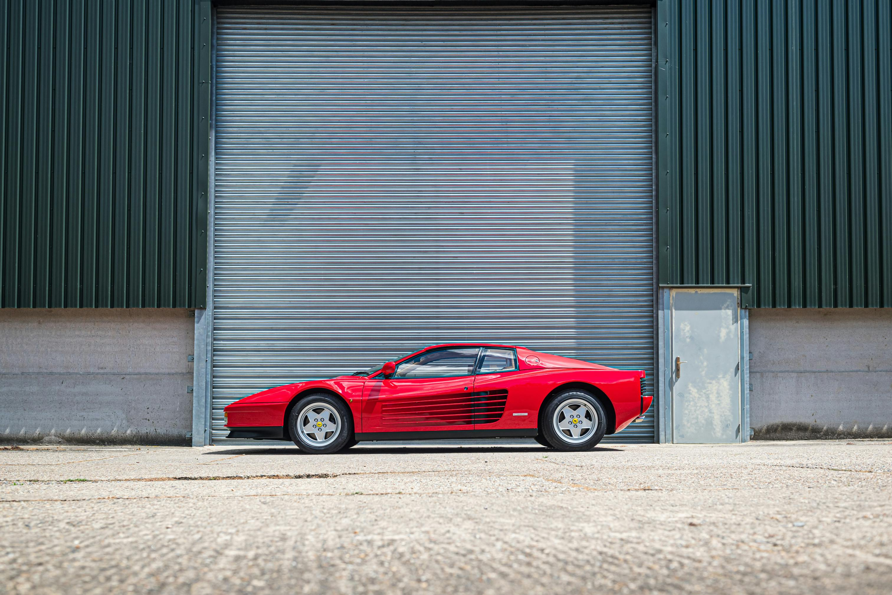
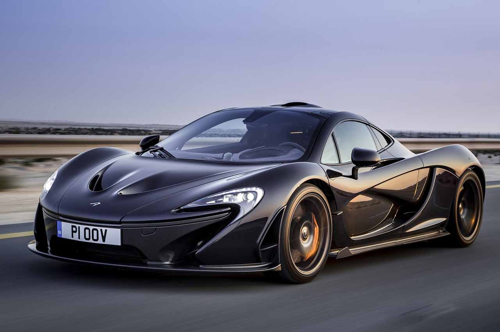

Desde los clásicos hasta la innovación moderna
Esta página muestra los coches más representativos de cada época para que puedas entender, de forma visual y rápida, cómo evolucionaron el diseño, la ingeniería y la cultura del motor desde los 60 hasta la era moderna. No es solo una galería: es una lectura histórica pensada para comparar estilos, tecnologías y personalidad por década.
Seleccionamos piezas clave para que la navegación sea clara y memorable: menos elementos repetidos, más contexto útil y acceso directo a cada década. El objetivo es que puedas pasar de la inspiración visual a la exploración detallada de cada sección en un solo clic.
Seis décadas, seis iconos. Una selección directa de los coches que mejor representan cada era.



